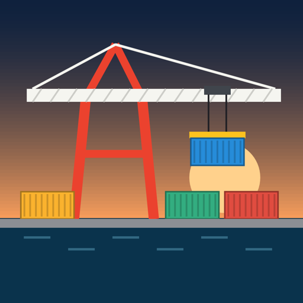
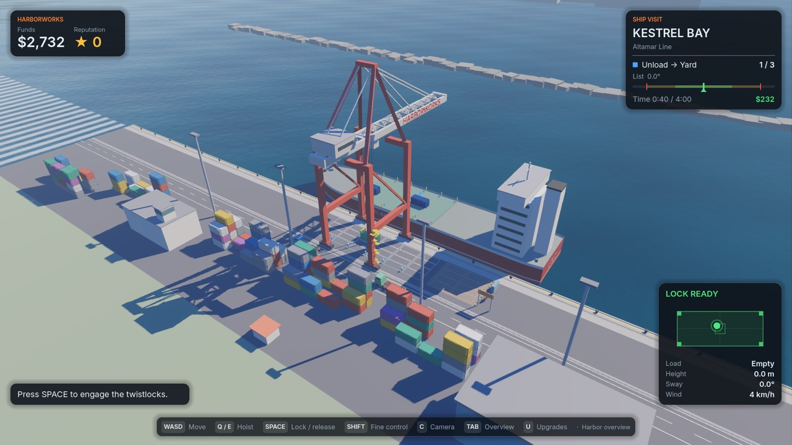
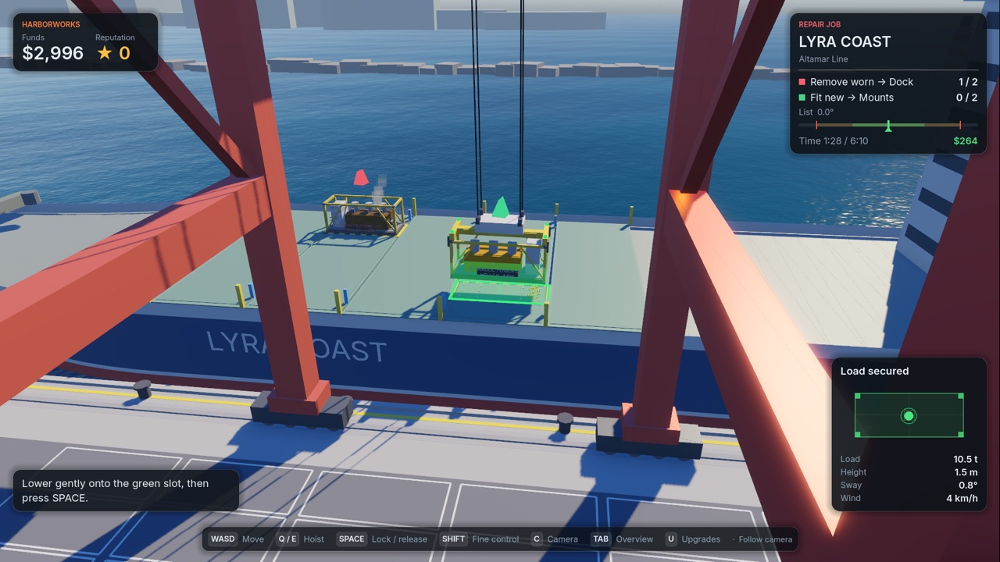

Android · iPhone · iPad · Steam
Harborworks
Take the controls of a ship-to-shore crane. Drive the gantry and trolley, ride the sway, line up the twistlocks and set a 25-tonne container down softly on its slot.

- Skill-based crane physics: real pendulum sway, wind and weight you can feel
- Unload and load ships, serve trucks, keep the ship upright with ballast
- Repair jobs: swap worn ship machinery with millimetre-precise fitting
- Equipment upgrades, three crane licences, English and Turkish
- No ads, no in-app purchases, no account — plays fully offline

Türkçe
Bir rıhtım vincinin kumandasına geç. Portalı ve arabayı sür, salınımı yönet, kilitleri hizala ve 25 tonluk konteyneri yuvasına yumuşakça bırak. Gemileri boşalt ve yükle, gemiyi dengede tut, arızalı gemi makinelerini değiştir. Reklam yok, uygulama içi satın alma yok, tamamen çevrimdışı.
Privacy Policy / Gizlilik · Terms of Use / Kullanım Koşulları · Support / Destek